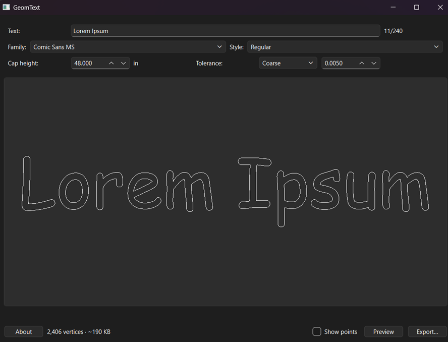

< GeomText >
Type a line of text. Get its letterforms as cuttable DXF geometry.

What it does
Type a line of text, pick an installed font, get its letterforms as DXF outline geometry you can cut. The DXF contains closed polylines — the real glyph contours — not DXF TEXT entities, so it does not matter whether your CAM software has the font.
Windows 10/11, 64-bit. Nothing to install: one file, no Python needed.
Running it
Double-click GeomText.exe.
Windows will probably stop you the first time: “Windows protected your PC”. That is SmartScreen reacting to an unsigned exe from an unknown developer, not a virus warning. Click “More info”, then “Run anyway”.
First launch scans every font on your machine and can take up to a minute with no window on screen. Later launches reuse the scan and open immediately. Fonts you install while GeomText is open show up on the next launch, not this one.
Quick start
- Type your text.
- Pick a family and a style.
- Set the cap height, in inches — that is the height of a capital H, not a point size and not the height of the tallest thing in your string.
- Press Preview. What you see is the vertices the file will contain.
- Export…
Before you cut
UNITS ARE INCHES AND THE FILE DOES NOT SAY SO. R12 DXF has no units record. Set inches when you import; if your CAM software assumes millimetres the part comes out 25.4x too small and nothing warns you.
The origin is the baseline at the left edge of the ink. Y=0 is the baseline, so descenders sit at negative Y.
Tolerance is the largest gap, in inches, between the flattened polyline and the true curve. Coarse 0.005″, Normal 0.001″, Fine 0.0002″. Same number at any cap height. Use “Show points” zoomed in on one letter to judge which you need.
Known limits in this build
- One line only. No wrapping, alignment, or line spacing.
- Latin / Western European, left to right. Hebrew and Arabic are refused rather than exported wrong.
- Characters the font does not contain are dropped, and named in the warning strip.
- Overlapping glyphs are not merged. Script fonts and tightly kerned pairs emit crossing outlines, which an even-odd CAM reader treats as holes.
- No mirroring for face-down cutting.
- Symbol fonts (Wingdings and friends) are listed with a warning icon. A typed “A” gives you whatever that font maps A to.
Check your font's licence before cutting its letterforms into anything you sell. GeomText does not check for you and cannot.
Source
GeomText is open source under the MIT licence: github.com/LemJukes/GeomText-pub.
Builds are published as releases — the download button above points at the v1.0.0-alpha asset.
Reporting a bug
File it at github.com/LemJukes/GeomText-pub/issues. Search first in case it is already open. No GitHub account? Email rob@rjgarner.com with the same information.
Tell me the exact text you typed, the font family and style, the cap height, and the tolerance — those four values reproduce almost everything — plus what you expected and what happened instead, and your Windows version and the version shown by the About button.
If it crashed or would not open at all, attach the log file at %LOCALAPPDATA%\GeomText\geomtext.log. A windowed exe has nowhere else to put the error, so that file is the single most useful thing you can send.